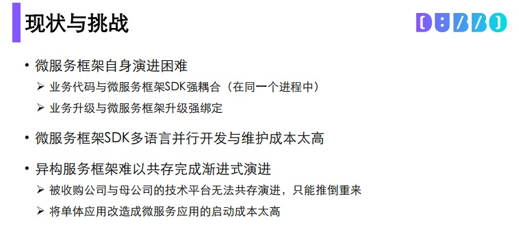
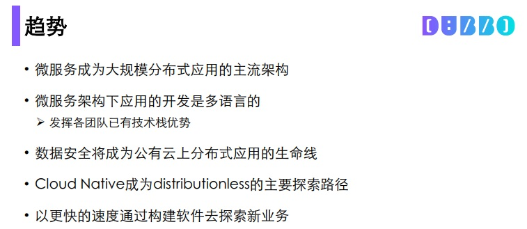
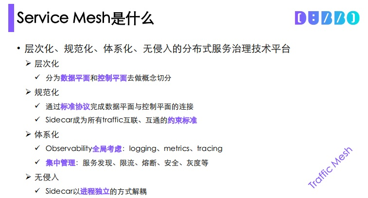
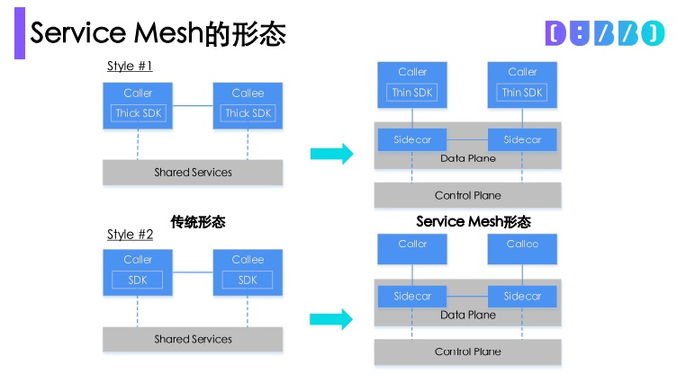

Dubbo Mesh ｜ Service Mesh的实践与探索¶
近日，在Aliware Open Source•成都站-Apache Dubbo 开发者沙龙上，阿里巴巴中间件高级技术专家李云（至简）向开发者们分享了阿里巴巴中间件团队在Service Mmesh领域的探索和最新实践。本文是根据至简的现场分享所整理，为大家回顾分享中的精彩内容。
精彩观点导读¶
-
我们去探索一项技术，并不会仅仅因为其先进性，而是因为我们目前遇到了一些无法解决的问题，而这项技术正好能解决这个问题。
-
所有软件最重要的使命不是满足功能要求，而是演进，从而持续成长。
-
微服务本质是对服务的拆分，微服务架构符合工程领域常用的“分而治之”范式。
前言¶
我们去探索一项技术，并不会仅仅因为其先进性，而是因为我们目前遇到了一些无法解决的问题，而这项技术正好能解决这个问题。现在，阿里巴巴整个集团业务的体量很大，在技术上会遇到很多的挑战。而正是因为这些挑战，让我们思考通过哪些新技术可以去解决这些痛点，这也是我们在Service Mesh领域进行探索和实践的出发点。首先，我们先来看看自己遇到了哪些挑战。
微服务的5大挑战¶
挑战一：微服务框架自身演进困难。¶
任何软件都会有他的生命进化曲线，从最初的萌芽，进入形成期，往上发展，再进入平台期，最后进入衰亡期。当然我们希望我们的软件可以在进入平台期后，能借助某次演进进入新的发展期。从这个维度看，所有软件最重要的使命不是满足功能要求，而是演进，从而持续成长。相反，当某个软件无法演进的时候，就会意味着死亡。但软件的演进并不是一个简单的事情，以微服务框架为例，为了进一步提升双11期间整个中间件平台的稳定性，我们会修改若干个功能，并以SDK的方式去提供给业务方，但业务代码和微服务框架SDK是强耦合的，这时候需要我们推动各个业务方和我们一同去做升级。虽然我们的初衷是实现平台稳定性的提升，帮助业务更好的发展，但这时由于大家的出发点和诉求有所不同，业务方和我们一起去做升级是比较困难的。所以要发展微服务框架，首先遇到的挑战就是演进困难。 
挑战二：微服务框架SDK多语言并行开发与维护成本高。¶
以前我们都是通过对技术栈的统一来提升成本优势和团队效率，大家可以用一种语言去开发和维护，避免多语言时团队的不聚焦。但在软件和开源生态演进的过程中，多语言已经成为一种流行，因为不同语言都有其自身的优势，今天大家能看到的一个现象是云原生的生态中有多种开发语言，使用频率最高的语言已经不是Java了，而是Go，是因为Go的footprint很小。再以 Dubbo为例，除了Java，我们还提供C++，Node.js的SDK，以便让更多的开发者可以加入Dubbo生态，但所有的这些，如果没有社区力量的参与，是很难维持的。
挑战三：异构服务框架难以共存完成渐进式演进。¶
我们结合场景来看看这个挑战。阿里巴巴收购了一些企业，被收购企业的技术栈可能和阿里巴巴不同，比如有些用的是Go语言，有些用的是PHP，这时候为了统一技术栈，我们需要对这类技术平台推倒重来，但这个过程中，我们会面临一系列问题，首当其冲的就是推倒重来会带来巨大的技术风险，其次是可能会面临技术人员大批量流失的风险，这在社会责任的层面也是很难接受。所以我们在寻求一种可能的方案，去解决这类问题。
挑战四：是单一的语言限制了人才的多样性。¶
这里，我们不去争论某个编程语言的好与坏，每个语言都有其适用场景，你不能说我手里有个榔头，你面对的都是钉子。以前我们觉得统一技术栈可以集中开发力量，并且带来较高的运维便利性。但伴随着互联网带来的快节奏，以往的团队能力设置已经很难满足这类变化，对工程师个体提出了更高的要求，我们不仅仅需要是某一方面的专家，而且还需要具备多域的工作技能，DevOps和全栈工程师就是这类快节奏变化下最好的注脚。
挑战五：是点状的服务治理难以做到及时、有效和经济。¶
微服务和架构的核心是拆分，通过拆分，让每个模块可以独立运行，跟上业务的发展速度，持续推动业务的创新。但拆完后新的问题出来了，缺少横向的内容拉通所有独立的烟囱，从而在服务治理上带来极大的挑战。
分布式应用的发展趋势¶
微服务会成为大规模分布式应用的主流架构。任何复杂的工程问题都会归结为devide and conquer（分而治之），意思就是就是把一个复杂的问题分成两个或更多的相同或相似的子问题，再把子问题分成更小的子问题……直到最后子问题可以简单的直接求解，原问题的解即子问题的解的合并。微服务本质是对服务的拆分，与工程领域惯用的“分而治之”的思路是一致的。
微服务架构下应用的开发是多语言的。没有一个语言是一家独大的，每种语言在特定场景下都有其自身的优势，我们希望这种优势能够将技术到产品的周期（time to market）缩短。技术的核心在于创造价值，无论是交付给客户，还是服务于整个社会。因此，微服务是需要不同语言的开发者发挥自身的优势，去进一步完善我们的微服务架构，释放技术价值。 
数据安全将成为公有云分布式应用的生命线。云原生时代，业务即便没上云，企业对自身数据的安全都是有诉求的，尤其是在金融行业，如果通过抓包就能获取一些敏感信息，这将会给企业带来巨大的风险。
Cloud native成为distributionless（无分布式）的主要探索路径。分布式发展的终极形式是无分布式，在未来我们做开发，所有的代码在web上写好后，通过点击一个按钮，所有部署都会自动实现，所有的code review的工作可以在一个统一的工作台上全部实现。

以更快的速度，通过构建软件去探索新业务。工程师服务的是客户，通过技术输出来实现技术价值，以互联网的架构帮助赋能传统企业，帮助企业获得差异化竞争力。
什么是Service Mesh¶
Service Mesh是层次化、规范化、体系化、无侵入的分布式服务治理技术平台。
层次化¶
分为数据面和控制面两个概念，数据面是指所有数据流动的那个层面，控制面是用来控制这个数据面的，对服务去做处理。对数据面和控制面进行分层，带来的好处是，针对一个复杂的系统进行切分，可以获得更清晰的认识，这和devide and conque是同一个理念。
规范化¶
是指通过标准协议完成数据平面和控制平面的连接，同时，sidecar成为所有traffic互联、互通的约束标准。

体系化¶
包含两个维度，一是指observability全局考虑。目前在整个分布式治理过程中的最大挑战是：logging、metrics、tracing这三个observability领域的核心内容缺少体系性的关注。另一个是集中管理的维度，包括服务管理、限流、熔断、安全、灰度在内的服务模块都可以在获得体系化的呈现，每个服务都可以被看到，而非团队a只看限流，团队b只看logging，需要一种技术能力拉通所有的服务模块，这个体系化这个角度看，Service Mesh是一个理想的技术方案。
无侵入¶
是指我们希望通过无侵入，当新增一个业务的时候，不需要考虑一个SDK去初始化，而是可以通过sidecar的进程方式来解耦。
Service Mesh的形态¶
我们从三个维度对比的来看 ServiceMesh 的形态。
图中左边是传统的微服务形态，调用者和被调用者是通过一个SDK的方式来实现共享服务的，以Dubbo为例，我们会在SDK里提供服务路由、服务发现等功能，虽然我们的开发者在做应用开发的时候并不会太关注SDK的构成，但这些功能是面临不断被变更的可能，有着比较重的逻辑。在右边Service Mesh的形态中，我们首先会对厚重的SDK进行分解，将复杂的逻辑下沉到sidecar，借助sidecar来实现服务的调用。

虽然在Service Mesh的形态，调用路径要长于传统的形态，路径越长消耗越大，对性能影响越大。但在当前的分布式应用的治理过程中，易用性已经成为一个比性能更重要的话题。当我们给客户部署一套微服务，即便性能很强，但没有处理好易用性问题的话，这将会给技术的推广带来巨大的阻碍，不仅是会影响外部的客户，也会影响内部的用户，如何实现喝着咖啡从容应对双11，必须先解决易用性的问题。在解决易用性问题后，沿着技术的发展路径再去解决性能问题。
Service Mesh的形态中的control plan不会导致重复建设，但在shared service是有可能存在重复建设的。
Service Mesh下的应用架构¶
无论是单体应用，还是分布式应用，都可以建立在Service Mesh上，mesh上的sidecar支撑了所有的上层应用，业务开发者无须关心底层构成，可以用Java，也可以用Go等语言完成自己的业务开发。
Service Mesh的价值¶
-
为单体应用向微服务架构演进提供了渐进的途径
-
为异构（微）服务框架/平台提供了融合发展的可能
- 被收购子公司与母公司的业务可以融合发展
-
加速（微）服务框架/平台自身的演进
-
让业务开发同学聚焦于业务逻辑本身
-
业务开发时无需关心安全、灰度、限流、熔断等通用的技术内容
-
培育了多语言业务开发的土壤
- 助力人才发展中编程语言的多样性
-
对（异构）微服务架构应用实现更为有效的全局一体化监管控
Dubbo Mesh的发展思路¶
-
迎合Kubernetes已成orchestrator王者的大势
-
开源版本与阿里巴巴集团内版本统一
-
与领域主流开源项目形成合力发展，源于开源、反哺开源
Q&A¶
阿里巴巴是怎么从微服务过渡到sidecar模式，再过渡到Service Mesh？¶
整个过渡是渐进式的，我们会将控制平面的一些组件先下沉到与sidecar部署在一起，这一下沉能很好复用开源软件已有的能力而减少开发工作量。当这一步骤完成后，被下沉的控制面组件会重新拉回到上面的控制面，那时就会面临一定的服务端改造，一旦改造完成就有了一个全新、完整的Service Mesh。
Service Mesh中的服务注册发现，负载均衡，网关，熔断降级，超时，限流，消息总线，分布式配置，这些都是怎么实现的？¶
Dubbo Mesh在控制面会基于Istio去做，而Istio已经具备了Kubernetes下的服务注册与发现能力，我们要做的是扩充Istio的能力，让服务注册与发现能与ZooKeeper、Nacos进行对接去完成。基于开源的Envoy所实现的sidecar已实现了超时处理的功能，相应的内容可以读代码去了解。其他内容我们仍在规划中。
Dubbo Mesh目前性能怎么样? 增加一层sidecar导致Dubbo的RT有多少？¶
在使用iptables的情形下，一跳增加1.5毫秒，如果不采用iptables直接proxy方式的情形下应当性能更好（这一点与Lyft也邮件确认过了），我们接下来会做更多的性能测试，目前的焦点更多在于功能层面。
Dubbo Mesh是把双刃剑，经过的链路更复杂，运维和开发者问题排查有没有更有效的工具？¶
理论上，增加一跳并没有改变服务调用的拓扑结构，但确实会增加复杂度，这个应当通过设计实现去解决。好在因为是一体化的方案，所以解决这类问题时需要更具全局视野。
Service Mesh中控制面板也用C++吗？我看主流很多实现都是Go， 我相信大佬做过技术调研，有哪些优势？¶
控制面是复用Istio的，是Go语言的。我们力争不重复造轮子，而是以开放的心态去共建。
Client做解码和反序列化是吧，有计划支持HTTP2协议吗？¶
Envoy默认就支持了，不需我们开发。这也是借力开源的收益。
Dubbo Mesh已经支持UNIX Domain Socket了吗？¶
目前不支持，这个还处于意向阶段。